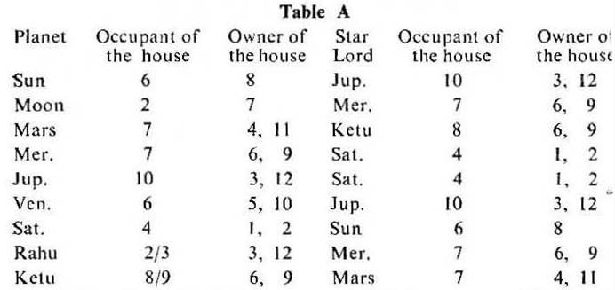
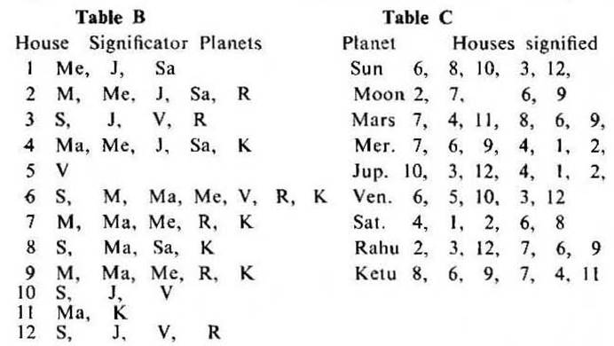

The affairs or matters signified by any house are judged from the significators of that house. So the occupant, the owner, a planet in the star of the occupant and a planet in the star of the owner of that house become the significators of that house. Hence note the significators.
The significators of each house are shown in the accompanying tables A, B and C.

Explanation: Sun is the occupant of 6, the owner of 8; Sun is in the Star Jupiter the occupant of 10 and the owner of 3 and 12. So Sun is the significator of the houses 6, 8; 10, 3 and 12; it signifies the matters of these houses and so on with other planets.

Explanation: The tables B and C have been prepared from the table A.
The table B shows the significators for each of the 12 houses. The significators of the house 1 are Me, J, Sa. The significators of the house 6 are S, M, Ma, Me, V, R, K; hence they signify the matters of that house and so on for other houses.
The table C shows the houses signified by each of the 9 planets. Moon is the significator of the houses 2, 7, 6, 9. Saturn is the significator of the houses 4, 1, 2, 6, 8; hence it signifies the matters of these houses and so on for other planets.